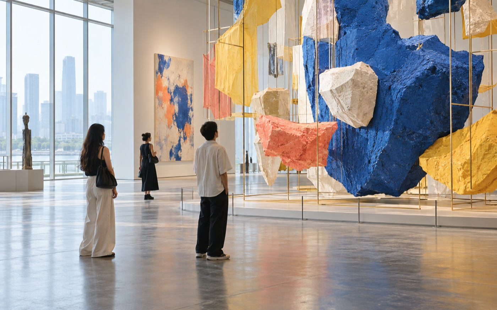

- PARTNER / 伙伴
- 袋鼠
- PERSONALITY / 人格
- 活力带队型
- CITY / 城市
- 上海 SHANGHAI
- FAVORITE / 喜欢
- 青草和树叶
“附近新鲜事，我带你找到！”
LEVEL 03 · 周末探索员
再完成2次出逃，即可升级。
7 次出逃12 枚脚印
上海周末 · 按自己的电量出发
想一个人自在逛，还是和新搭子热闹出发？告诉我们今天的社交电量，活动与陪伴都刚刚好。
MATCH YOUR ENERGY
6 个活动刚刚好晴天优先 · 可独自参加 · 不强制互动
提高预算或换一种活动类型试试看。
LOW-PRESSURE SOCIAL
先把彼此舒服的相处方式说清楚，见面少一点猜测，多一点自在。
根据你的社交电量，为你优先排列了 8 个合适小队。
CITY ESCAPE PASSPORT
独自出发，也是一段完整旅程。每次打卡都会写进你的城市成长档案。
每个活动仅能完成一次打卡
“附近新鲜事，我带你找到！”
再完成2次出逃，即可升级。
再完成2次出逃，即可升级。
下一枚印章，留给这个周末。
每种城市体验只收藏一枚印章，重复出发会在同一枚上留下次数。
同行不是任务，是刚刚好的陪伴。每一次同频相遇，都会成为护照里的一张签证。
下一次出逃，
也许会遇见新的同频伙伴。
ESCAPE FIELD NOTES
避开人流的三个转角、两家可以独坐的咖啡店，都标在路线里了。

独处友好从安静展厅到江边长椅，附上存包位置和不用排队的入场时段。
舞台左右两侧氛围不同，第一次去的人可以按社交电量选区域。